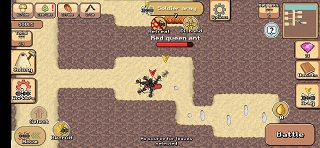

Truques e dicas do Pocket Ants: guia para criaturas, batalhas e muito mais
3 de Setembro de 2024 por Rodrigo
Pocket Ants: Colony Simulator é um jogo popular para celular onde você constrói um esquadrão de formigas e criaturas, batalha contra formigas inimigas, ataca outros jogadores e melhora o ninho. Continue lendo para dicas e truques do Pocket Ants apresentados com um guia para iniciantes; criaturas, batalhas, pedras e muito mais

Truques, dicas e guias do Pocket Ants⇓
Primeiro as coisas mais importantes – a primeira coisa que recomendamos é capturar a base das formigas vermelhas matando a rainha das formigas vermelhas. Esta tarefa ajudará você a dominar a mecânica de combate rapidamente. Ao eliminar a rainha das formigas vermelhas, você obterá feromônios que pode usar para atrair criaturas. As criaturas reaparecem a cada 24 horas, as formigas vermelhas reaparecem a cada 12~24 horas e os pulgões reaparecem a cada 6 horas. Durante os eventos, os tempos de spawn podem ser reduzidos pela metade. ou seja, evento de Halloween. Vamos aprender tudo em detalhes e explorar todas as dicas, cheats e tricks do Pocket Ants apresentados neste guia passo a passo –
Um guia rápido para recursos do jogo no Pocket Ants Game⇓
Os cinco recursos do jogo são Honeydew, Seed, Leaf, Food e Body Parts.
Honeydew -
você obterá esse honeydew dos pulgões. Depois de construir a câmara de honeydew, vá para fora do ninho e derrote as “formigas de fogo”. Depois de derrotar todas, você terá que proteger o comboio de pulgões de mais formigas de fogo – o comboio carrega pulgões e os deixa cair no ninho – dentro da câmara de honeydew que você construiu na base. Soltar pulgões na câmara de honeydew lhe dará honeydew.
Fazenda de afídeos :
você deve construir a câmara de honeydew na base para fazê-la aparecer. A fazenda de afídeos é protegida pelas formigas de fogo. Derrote-as e então proteja o comboio para obter Honeydew!
Semente -
colete fora do ninho com a ajuda de operárias e jogue no depósito de sementes. As sementes serão usadas em melhorias de câmara ou outras tarefas.
Folha -
reúna-se fora do ninho com a ajuda de operárias e jogue-as na câmara de armazenamento de folhas. As folhas são usadas na produção de alimentos e outras melhorias. Se você jogar as folhas na câmara de processamento de alimentos, obterá comida de fungo que pode alimentar a rainha formiga
Alimentos (fungos) –
alimente a rainha com alimentos e produza soldados ou operárias.
Partes do Corpo –
derrote a criatura do lado de fora e colete partes do corpo. Você pode usar partes do corpo para construir/melhorar a câmara de escravidão ou fundir/melhorar as criaturas no menu do exército. A câmara de escravidão é necessária para capturar os recursos.
Resina -
com resina, você pode melhorar a câmara da rainha. Ou você pode gastar a resina no privilégio de resina para comprar itens valiosos. Você pode obter resina das árvores. Observe que ela seria guarnecida pelos cupins soldados.